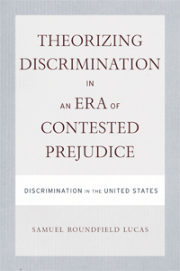

Offers a fresh, important new understanding of racial and sexual discrimination
Offers a fresh, important new understanding of racial and sexual discrimination


 Offers a fresh, important new understanding of racial and sexual discrimination
Offers a fresh, important new understanding of racial and sexual discrimination

|  |
Theorizing Discrimination in an Era of Contested PrejudiceDiscrimination in the United States, Volume 1Samuel Roundfield Lucaspaper EAN: 978-1-59213-913-2 (ISBN: 1-59213-913-2) |
"Brilliant and fascinating...one of the smartest social science books I can recall reading."
—Barbara Reskin, University of Washington"An erudite, confident, clearly written and valuable contribution to an important subject."
—John Skrentny, University of California, San Diego
Despite several decades of attention, there is still no consensus on the effects of racial or sexual discrimination in the United States. In this landmark work, the well-known sociologist Samuel Lucas shows how discrimination is not simply an action that one person performs in relation to another individual, but something far more insidious: a pervasive dynamic that permeates the environment in which we live and work.
Challenging existing literature on the subject, Lucas makes a clear distinction between prejudice and discrimination. He maintains that when an era of �condoned exploitation� ended, the era of �contested prejudice,� as he terms it, began. He argues that the great strides made in the 1950s and 1960s repudiated prejudice, but not discrimination. Drawing on critical race theory, feminist theory, and a critique of dominant perspectives in the social sciences and law, Lucas offers a new understanding of racial and sexual discrimination that can guide our actions and laws into a more just future.
Excerpt available at www.temple.edu/tempress
"In this original and aggressively probing book, Lucas presses deeply into traditional social science understandings of prejudice and discrimination, showing the limiting character of these too-individualistic tools in conventional survey and legal analysis. Assessing the societal shift from overt exploitation to an era of �contested prejudice,� yet one where discrimination remains pervasive, Lucas shows that social scientists must better theorize social contexts and the highly relational (often damaged) character of racial/gender relations. The goal is much more convincing social science understandings of these still-pervasive societal barriers."
—Joe R. Feagin, Ella C. McFadden Professor of Liberal Arts, Texas A & M University, and author of Systemic Racism: A Theory of Oppression
"Samuel Lucas here offers an analysis with breathtaking subtlety, theoretical sophistication, and remarkable clarity. Theorizing Discrimination in an Era of Contested Prejudice is a must read and must use work for serious discussion of the study of discrimination or what W.E.B. Du Bois characterized as the color and, as Lucas aptly demonstrates, gender line into the twenty-first century."
—Lewis R. Gordon, author of Disciplinary Decadence and Director of the Institute for the Study of Race and Social Thought and the Center for Afro-Jewish Studies
�[F]ull of insights, compelling analysis, and provocative (in the best sense of the term) arguments�. Theorizing Discrimination is worth pondering, if only for the many aper�us of a smart and knowledgeable author�.. Lucas comes across as a vivid, earnest, smart, iconoclastic thinker. Theorizing Discrimination makes one think.�
—Contemporary Sociology
"This quirky, serious, intelligent book should, at a minimum, force some clearer thinking about the place of sociology.... The book is most compelling when it applies its sharp critical perspective to both societal practices and social science research.... It offers plenty of material to think through, agree with and argue against...it will force readers to reconsider a few tired ways of thinking about discrimination--something this field, in particular, desperately needs."
—The American Journal of Sociology
Acknowledgements
Introduction: Evidently
1. Discrimination in the Era of Contested Prejudice: Fundamental Bases
2. Experimental Realities and Public Contestation
3. From Condoned Exploitive Relations to the Era of Contested Prejudice
4. Defining, Finding, and Remedying Discrimination: Dominant Legal Perspectives
5. Defining, Finding, and Remedying Discrimination: Critical Legal Perspectives and the Critique of the Dominant Legal View
6. Defining Discrimination Effects: An Asocial Scientific Method
7. Discrimination as a (Damaged) Social Relation
8. Epistemological Foundations for Studying Effects of Discrimination as a Social Relation
9. Theorizing Discrimination in an Era of Contested Prejudice
Appendix A: Commentary on Methods of Data Analysis for Chapter 2
Appendix B:Commentary on Simulations for Chapter 5
Reference
Index
Samuel Roundfield Lucas is Associate Professor of Sociology at the University of California, Berkeley. He is the author of Tracking Inequality: Stratification and Mobility in American High Schools and a co-author of Inequality By Design: Cracking the Bell Curve Myth.
Sociology
Race and Ethnicity
Women's Studies
© 2015 Temple University. All Rights Reserved. This page: http://www.temple.edu/tempress/titles/1971_reg.html.